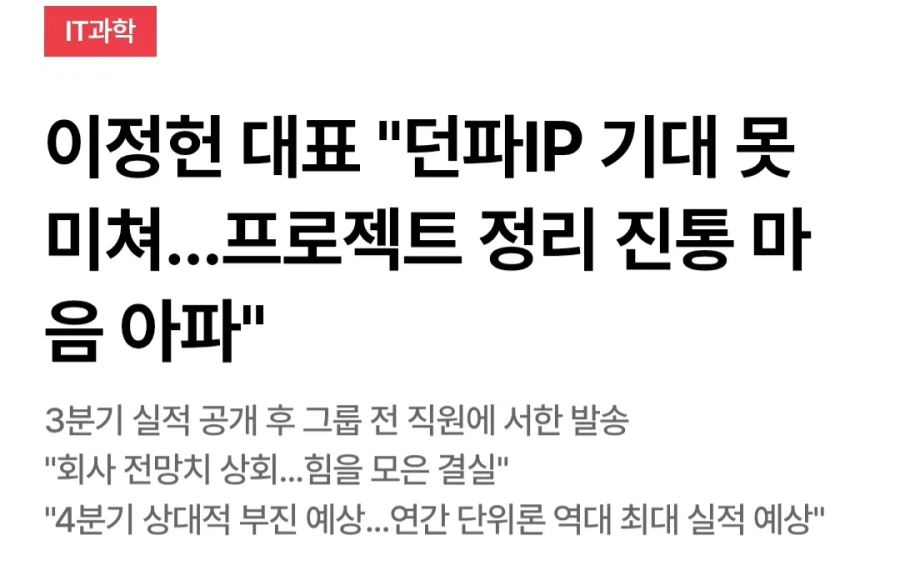
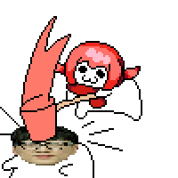

정보
던파는 본가 게임에 대한 관리는 내팽겨치고 문어발식 ip확장(3d던파,카잔(던파소울류),던파듀얼)을 하다 대부분 망했다.
그나마 유지 되는게 던파 모바일 정도
https://news.mtn.co.kr/article/2026111019451592310

정보
던파는 본가 게임에 대한 관리는 내팽겨치고 문어발식 ip확장(3d던파,카잔(던파소울류),던파듀얼)을 하다 대부분 망했다.
그나마 유지 되는게 던파 모바일 정도
https://news.mtn.co.kr/article/2026111019451592310
아니 던파가 스토리라는게 제대로 있기는 한 게임임? ㅋㅋ
카잔 재밌게했는디 대차게 팽당해서 아쉽
던파 세계관은 흥미로운데 능력이 없어서 이걸 살리지 못하네
카잔은 새로 시도한 형식치곤 괜찮게 만든건데 넥슨수익의 거의 절반을 짊어진 스튜디오가 취미생활로 돌리기엔 본체가 너무 컸음

카잔 나름 콤보넣고 손맛 꽤 좋았는데
카잔 망했나? 몇십시간 꽤 재밌게 했었는데
카잔은 흥행엔 실패했지만 웰메이드라 솔직히 업적작으로 봐줄만한데 다른거 막 확장한 건 이해가 안 되는 행보임
더군다나 RPG 유저들이 시즌제 게임 자체에 질려가고 있어서..
설정딸 치는거랑 설정을 매력적인 이야기로 풀어내는건 차원이 다르니까
사족이 잘 이해가 안가는데 그거랑 던파 망한거랑 뭔 상관임? 던파 ip 확장을 지금 있는 디렉터가 결정한 것도 아니고 그냥 넥슨에서 해봐 해서 했던걸텐데?
카잔 개발실 터트린것도 넥슨이잖음 던파 망한건 던파 디렉터 책임인데 별 상관없는걸 가져와서 왜저럼?
오히려 네오플 자체에서 힘줬던건 던파모바일임 본문 사족에서 그나마 유지라며 평가 절하하는데 첫해에는 1조 넘게 벌었고 그래도 연에 8천억 넘게 버는 프로젝트임
저래도 안짤리자나 한잔해